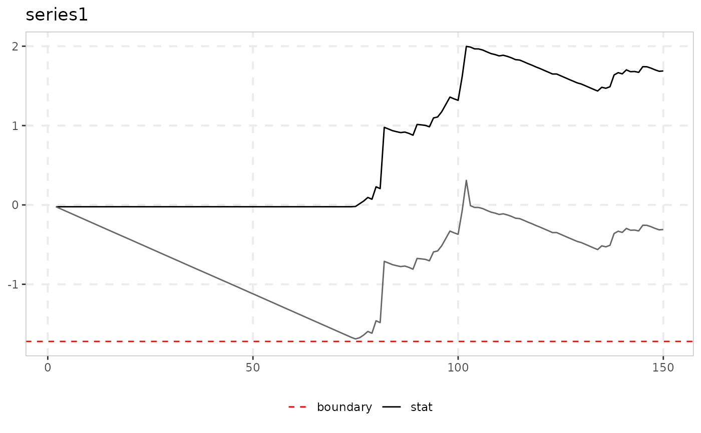

CUSUM and CUSUM-of-Squares Bubble Tests (Kurozumi & Nishi 2025)
Source:R/cusum_test.R
cusum_test.Rdcusum_test implements the retrospective CUSUM ("cs"),
generalized CUSUM ("gcs"), CUSUM-of-squares ("cssq") and
generalized CUSUM-of-squares ("gcssq") tests of Kurozumi & Nishi
(2025), Brown et al.'s (1975) parameter-constancy statistics applied to
the first differences. The generalized versions take the supremum over
every window start as well as every end point.
Usage
cusum_test(data, sig_lvl = 95, type = c("cs", "gcs", "cssq", "gcssq"))Arguments
- data
A univariate or multivariate numeric time series object, a numeric vector or matrix, or a data.frame. A column may have leading and/or trailing
NAvalues (an uneven/unbalanced panel where series enter or exit the sample at different times) – those periods are filled withNAinbadf/bsadfand excluded from that series'adf/sadf/gsadf. InteriorNAvalues (a gap in the middle of a series) are not supported. When any series is padded this way, the panel statistic (bsadf_panel/gsadf_panel) is not available and is returned asNA, with a warning.- sig_lvl
Significance level on the package-wide 0-100 scale, one of
90,95,99.- type
One of
"cs","gcs","cssq","gcssq".
Value
An object of class cusum_test_obj: a list with the
statistic path stat (one value per end point; for the
generalized versions the sup over window starts), stat_inf (the
inf path, CSSQ/GCSSQ only), the statistic sup (and inf),
the critical value(s) crit, and detected.
Details
CS/GCS reject when the cumulated increments get too large (right tail).
CSSQ/GCSSQ are two-sided: they reject when the cumulated squared
increments drift too far above or below their full-sample
average, each tail at half the level. The paper finds the CUSUM-type
tests lose almost all power once the explosive coefficient is
genuinely stochastic, while the CUSUM-SQ type keeps it – see
ssu_test for the paper's more powerful statistics.
Note
All critical values are published asymptotic values (Kurozumi & Nishi (2025)'s Table I); no minimum window is needed (the paper finds the statistics insensitive to it).
![[Experimental]](figures/lifecycle-experimental.svg)
References
Kurozumi, E., & Nishi, M. (2025). Bubble testing with stochastically varying explosive coefficient. Journal of Time Series Analysis, 46(5), 945-965.
Brown, R. L., Durbin, J., & Evans, J. M. (1975). Techniques for testing the constancy of regression relationships over time. Journal of the Royal Statistical Society B, 37(2), 149-192.
See also
ssu_test; monitor_cusum for
real-time CUSUM monitoring.
Other volatility-robust tests:
radf_kp(),
radf_sbz(),
radf_sbz_union(),
radf_sign(),
radf_sign_dm(),
radf_tt(),
ssu_test()
Examples
y <- sim_psy1(n = 150, te = 75, tf = 150, c = 3, alpha = 1, seed = 2001,
coef_noise = rnorm(149), coef_a = 4)
cusum_test(y, type = "cssq")
#>
#> ── cusum_test (CSSQ, n = 150, sig_lvl = 95%, crit = 1.32 / -1.34) ──────────────
#>
#> series sup inf detected
#> series1 0.3095 -1.688 TRUE
#>
autoplot(cusum_test(y, type = "gcssq"))
#> Warning: Removed 151 rows containing missing values or values outside the scale range
#> (`geom_line()`).
